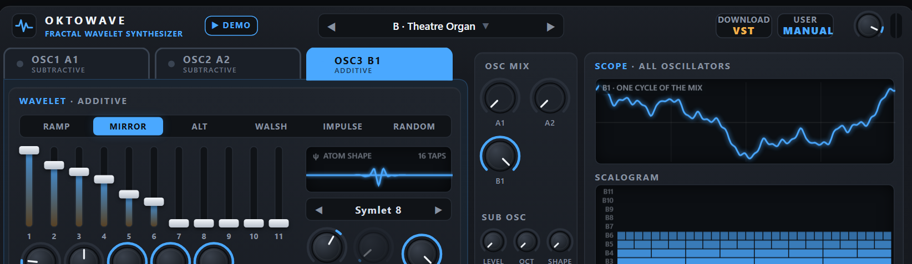
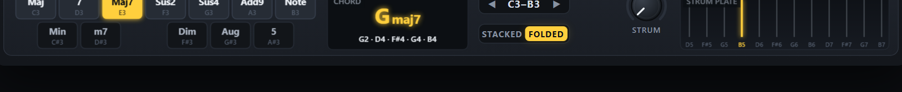

OKTO MULTIWAVE SYNTH · USER MANUAL B
OSCILLATORS B1 · B2Wavelet Additive
The oscillators B1 and B2 are additive, with a wavelet twist. They are built from wavelet atoms: an atom pattern writes the coefficients of the 11 octave bands, the drawbars set the level of every band, and each band has its own envelope — so the fine detail of a note can die away before its body, as in a real string or bell. The same SCALE FILTER and POSITION window as the subtractive oscillators shape the result. Okto MultiWave Synth has two of each kind and mixes them: this manual is about the additive pair; Manual A describes the subtractive one.
1Quick start
From closed to sounding in a few steps — pick the column for the version you use.
Web app BROWSER
- Double-click
web/index.htmlto open it in Chrome or Edge (Firefox also works). No installation and no web server are needed — or open the page of the project:pierrearnaudguyot.github.io/Okto-MultiWave-Synth. - Click Play the synth in the welcome window (or Run the demo for a tour of the presets): browsers only allow sound after a click. The status bar turns green: Audio on.
- The app opens on A · Warm Pad. Play with the mouse on the keyboard, the digit keys 1 … 0, the letter row A S D F …, or a MIDI keyboard.
- Click the tabs A1 A2 B1 B2 in the header to see each oscillator's cards. The tabs only choose the panel shown: what you hear is set by the four levels in the OSC MIX card.
- Click B1, raise B1 in OSC MIX and lower A1 to hear the additive oscillator alone. Pull the drawbars down one by one from the right: the sound loses brightness band by band. Then click the PATTERN buttons to hear the other atom patterns.
Ableton Live VST3 / VST2
- Download the plug-in zip from its release page (the web app's DOWNLOAD VST button opens it) and unzip it. Copy the whole
OktoMultiWaveSynth.vst3folder into your VST3 folder (C:\Program Files\Common Files\VST3;vst\install.batdoes it and asks for administrator rights) or into your VST2 plug-in folder. - In Live open Preferences → Plug-ins, switch on Use VST3 Plug-in System Folders (or Use VST2 Plug-in Custom Folder) and click Rescan.
- In the browser open Plug-ins → OktoPierre → Okto MultiWave Synth and drag it onto a MIDI track. A new instance starts on A · Warm Pad.
- Arm the track and play a MIDI keyboard, or press M to use Live's Computer MIDI Keyboard. The panel is the same as in the web app.
Want to hear what it can do first? ▶ DEMO (web app) plays Beethoven's Appassionata while the presets change every few seconds; EVALUATE SOUNDS (web app and plug-in) lets you hear each of the 200 new presets and rate them — see Evaluate sounds.
2The panel
The panel is the same in the web app and the plug-in, apart from a few buttons (the web app's DEMO and DOWNLOAD VST, the plug-in's size button, SAVE PRESET and the SYNC buttons of the tempo sync). From top to bottom: the header; the card of the oscillator shown, OSC MIX and the SCOPE; SCALE FILTER, POSITION and the oscillator's TUNE / OWN ENVELOPE / PITCH ENVELOPE; AMP ENVELOPE, MOD ENVELOPE and EFFECTS; LFO 1, LFO 2 and VOICE; the keyboard row. With CHORD MODE on, the chord-harp card appears below and the window grows. The credit line “By OktoPierre · beta 0.1 · GPL v3” sits under the wheels.
- 1Oscillator tabs — A1 A2 B1 B2: which oscillator's cards are shown (the sound is set by OSC MIX).
- 2Preset browser — ◀ ▶ step through the presets; click the name for the list.
- 3EVALUATE SOUNDS — the listening test of the new presets.
- 4DOWNLOAD VST / SAVE PRESET — the web app links to the plug-in; the plug-in has SAVE PRESET here.
- 5MANUAL — this manual on an A tab, the other one on a B tab.
- 6VOLUME and meter — master level and stereo peak meter.
- 7PATTERN — the atom pattern that writes the coefficients.
- 8Drawbars 1–11 — the level of each of the 11 bands.
- 9ATOM SHAPE · WAVELET — one atom of the selected wavelet; the wavelet below it.
- 10TILT · SEED — dB per band across the drawbars; the seed of the RANDOM pattern.
- 11Band envelope — SCALE ATTACK, SPREAD, BODY, BRIGHT, SCALE SUSTAIN: the time behaviour of each band.
- 12OSC MIX — four levels, one per oscillator; below them the SUB OSC.
- 13SCOPE · SCALOGRAM — one cycle of the oscillator shown; its atoms in the 11 bands.
- 14SCALE FILTER — a gain for each wavelet band: type, cutoff, slope, resonance, key tracking, envelope, velocity.
- 15POSITION — confines the filter or the detail to part of the cycle.
- 16TUNE · OWN ENVELOPE · PITCH ENVELOPE — the oscillator's own pitch, its own loudness envelope and its pitch envelope.
- 17AMP ENVELOPE — loudness of the whole sound.
- 18MOD ENVELOPE — moves the cutoff of every oscillator by its ENV AMT.
- 19EFFECTS — saturation, chorus, ping-pong delay and reverb.
- 20LFO 1 — pitch, cutoff, position and wavelet morph.
- 21LFO 2 — one parameter chosen by TARGET, in every oscillator.
- 22VOICE — portamento, octave, tuning, polyphony, glide, unison.
- 23CHORD MODE — shows the chord-harp card and turns the keyboard into chords.
- 24Wheels · keyboard — pitch bend, modulation; five octaves.
The header
| Control | What it does |
|---|---|
| ▶ DEMO ▾ (web app) | Plays the default demo, a tour of the presets; the ▾ opens other pieces and "Load a MIDI file…". |
| A1 · A2 · B1 · B2 | Choose which oscillator's cards are shown in the upper left (teal for the subtractive A1 A2, amber for the additive B1 B2). They never change the sound, and never mark a preset as modified. |
| Preset box | The name of the sound; a dot after it means it was modified since it was loaded. ◀ ▶ step; a click opens the preset browser. |
| EVALUATE SOUNDS | The listening test of the new presets (see Evaluate sounds); it lights up and says STOP while a session runs. |
| DOWNLOAD VST · SAVE PRESET | The web app's button opens the plug-in's release page; in the plug-in the same place holds SAVE PRESET. |
| MANUAL | Opens the manual of the oscillator shown — Manual A on A1 or A2, Manual B on B1 or B2; each links to the other. |
| VOLUME · meter | Master level (−36 … +6 dB) and the stereo peak meter. |
Working with the controls
| Gesture | Effect |
|---|---|
| Drag up / down | Changes the value; a full sweep takes about 180 pixels (120 on a drawbar). |
| Shift + drag | Five times finer. |
| Mouse wheel | Steps of 1 % of the range (0.2 % with Shift); one step on stepped controls. |
| Double-click, or Ctrl + click | Resets the control to its default. |
| Hover | The label under a knob shows its value with its unit. |
| Right-click (web app) | MIDI learn: then move a knob or fader on your controller (Esc cancels, Delete unlinks). |
| Greyed-out control | Has no effect with the current settings (WIDTH unless the wave is PULSE or TRI, SEED unless the pattern is RANDOM, the sub oscillator's OCT and SHAPE while its LEVEL is 0). |
3Four oscillators
Okto MultiWave Synth plays up to four oscillators in every voice: A1 and A2 (wavelet subtractive), B1 and B2 (wavelet additive). A new patch plays A1 alone; the four levels in the OSC MIX card decide which oscillators sound and how loud. Each oscillator is a small instrument of its own — its tone, its SCALE FILTER, its POSITION window, its tuning, its own envelope and its pitch envelope — while the AMP ENVELOPE, MOD ENVELOPE, LFOs, VOICE settings, effects and sub oscillator are shared by the whole voice.
- One panel at a time. The tabs A1 A2 B1 B2 show one oscillator's cards; the other three keep their settings and keep sounding. Switching a tab never changes the sound and never marks a preset as modified.
- Levels cost nothing at 0. An oscillator whose level is 0 is not computed and its wave tables are not even built, so presets that use two oscillators cost about twice one — not four times. A level is smoothed over 20 ms, so it can be moved while playing.
- Every preset uses at least two oscillators (the 22 TOP Sounds keep their one or two of the Wavelet Synthesizer). The letters in the names of the new presets —
A1A2,B1B2,A1B1— say which.
OSC MIX and SUB OSC
| Control | Range · default | What it does | Tip |
|---|---|---|---|
| A1host: A1 Level | 0 – 100 %default 100% | The level of oscillator A1 (subtractive). 100 % on a new patch. | The tone card of each oscillator has the same knob. |
| A2host: A2 Level | 0 – 100 %default 0% | The level of A2 (subtractive). | A second subtractive voice: a detuned copy, an octave, a different wave or filter. |
| B1host: B1 Level | 0 – 100 %default 0% | The level of B1 (additive). | |
| B2host: B2 Level | 0 – 100 %default 0% | The level of B2 (additive). | Often the short attack or the shimmer on top of another oscillator. |
| LEVELhost: Sub Level | 0 – 100 %default 0% | The sub oscillator: a sine, triangle or square one or two octaves below the note, unfiltered, once per voice. | Adds weight; it does not go through the scale filters. |
| OCThost: Sub Octave | −1 · −2default −1 octave | −1 or −2 octaves. | |
| SHAPEhost: Sub Shape | SIN · TRI · SQRdefault Sine | Sine, triangle or square. |
TUNE, OWN ENVELOPE and PITCH ENVELOPE
The wide card in the middle of the third row belongs to the oscillator shown; the card's title says which. It is what turns four oscillators into a sound with a front and a body.
| Control | Range · default | What it does | Tip |
|---|---|---|---|
| OCTAVEhost: A1 Octave | −3 … +3default 0 | Transposes the oscillator by whole octaves. | A2 an octave down under A1 is the classic "saw + sub saw". |
| SEMIhost: A1 Semitones | −12 … +12 semitonesdefault 0 st | Transposes by semitones. | +7 gives a fifth; +12 an octave. |
| FINEhost: A1 Fine Tune | −100 … +100 centsdefault 0 ct | Fine tuning in cents. | ±6–15 cents between two oscillators gives a beating, chorused sound. |
| OWN ENVhost: A1 Own Envelope | OFF · ONdefault Off | Switches the oscillator's own envelope on. The oscillator is then multiplied by its own ADSR as well as the AMP ENVELOPE, so it can only be shorter than the voice: a short decay makes it a percussive attack (a click, a pluck, a breath); a slow attack makes it fade in under the others. | The ADSR display next to it draws the shape. |
| ATTACKhost: A1 Env Attack | 1 ms – 10 sdefault 1.0 ms | Attack of the own envelope (linear). | |
| DECAYhost: A1 Env Decay | 1 ms – 10 sdefault 250 ms | Decay to the sustain level (exponential; the time to fall by 60 dB). | 20–80 ms for a click, 200–600 ms for a pluck. |
| SUSTAINhost: A1 Env Sustain | 0 – 100 %default 0% | Sustain level. | 0 % makes a one-shot attack that dies by itself. |
| RELEASEhost: A1 Env Release | 1 ms – 10 sdefault 150 ms | Release after the key is released. | |
| PITCH ENVhost: A1 Pitch Env Amount | −48 … +48 semitonesdefault 0 st | The pitch envelope: the oscillator starts this many semitones away from the note and glides to it (negative = it starts below). | +12 … +30 with a short TIME is a kick or a zap; a small value is a "blip" on every note. |
| TIMEhost: A1 Pitch Env Time | 5 ms – 2 sdefault 80 ms | How long the glide takes to come back to the note: exponential, the time to fall by 60 dB (half of the distance is covered in about a tenth of it). |
The table shows the ranges and defaults of A1's controls; A2, B1 and B2 have the same ones. The own envelope has no effect while its switch is off.
Ideas, and presets to study
| Idea | How | Look at |
|---|---|---|
| A percussive attack | One oscillator with its own envelope: a noise cycle played low (OCTAVE −2 or −3) through a high-pass at band 6–9, DECAY 20–40 ms, SUSTAIN 0; the other oscillator is the body. | 002 A1A2 · Pick Bass, 190 A1A2 · Snare, 012 B1B2 · Pedal Bass |
| A pitch drop | A sine with PITCH ENV +12 … +30 semitones and a TIME of 30–60 ms. | 189 A1A2 · Kick, 004 A1A2 · Sub Drop, 198 A1B1 · Tom |
| A fat pair | Two oscillators of the same kind a few cents apart, or an octave apart with different cutoffs. | 005 A1A2 · Reese Duo, 001 A1A2 · Deep Saw Bass, 075 A1A2 · Velvet Pad |
| Additive body, subtractive attack | B1 for the body (drawbars, atoms), A1 as a short, bright start. | 058 A1B1 · Rhodes Warm, 062 A1B1 · Dream Keys, 120 A1B1 · Solo Violin |
| Two additive voices | Different atom patterns, or the same pattern at two octaves, with their own band envelopes. | 144 B1B2 · Harp, 163 B1B2 · Marimba, 085 B1B2 · Crystal Choir, 063 B1B2 · Full Drawbar Organ |
4The additive oscillators B1 · B2
A B oscillator builds its sound from atoms: a pattern writes the coefficients of the 11 bands, the drawbars (with TILT) set their levels, and a scale envelope gives every band its own time behaviour — before the oscillator's filter, window, own envelope and the AMP ENVELOPE shape the whole.
Every oscillator plays one cycle of 2048 samples, analysed by a periodic wavelet transform into 11 bands: band b has 2b−1 atoms and covers about one octave of harmonics (band 1 the fundamental, band 2 the 2nd harmonic, band 3 harmonics 3–4, band 4 harmonics 5–8 …). The analysis is pitch-synchronous, so the bands follow the note. To keep high notes alias-free each band is stored in octave-wise band-limited versions: the finest bands only exist on low notes — at middle C only bands 1–7 are played, at C2 bands 1–9. The SCALOGRAM draws the atoms of the 11 bands of the oscillator shown (B1 at the bottom).
| Control | Range · default | What it does | Tip |
|---|---|---|---|
| PATTERNhost: Atom Pattern | RAMP · MIRROR · ALT · WALSH · IMPULSE · RANDOMdefault Ramp | The atom pattern that writes the coefficients: RAMP, MIRROR, ALT, WALSH, IMPULSE, RANDOM. Each band layer is peak-normalised, so the drawbars set the real level of a band. | RAMP + TILT −6 dB/band with Haar is a sawtooth staircase; MIRROR is hollow and organ-like; IMPULSE puts all the detail at 0°; RANDOM is bell-like. |
| SEEDhost: Random Seed | 0 – 99default 1 | Only for the RANDOM pattern: which random atoms. | Different seeds are different bells. |
| TILThost: Tilt | −24 … +12 dB/banddefault −6.0 dB/band | Slopes the drawbars: dB per band, positive = brighter, negative = darker, applied on top of the drawbars. | A quick way to change the brightness of a whole sound. |
| 1host: Band 1 Level | 0 – 100 %default 100% | The drawbars 1 … 11: the level of each band (band 1 at the left). The level is normalised by max(1, the sum of the bars), so pulling bars down makes the sound darker and quieter. | Hover a bar to read its band. |
| ATTACKhost: Scale Attack | 1 ms – 5 sdefault 5.0 ms | SCALE ATTACK: how long the finer bands take to arrive after the body. | A slow attack on the high bands makes a bowed or breathy start. |
| SPREADhost: Attack Spread | −100 … +100 %default 0% | SPREAD: moves the band timing up or down the bands (positive: the fine bands are late and die early; negative: the other way). | |
| BODYhost: Body Decay | 10 ms – 20 sdefault 20.00 s | BODY: how long the low bands last. | With BRIGHT shorter than BODY the fine detail dies before the body, as in a real string. |
| BRIGHThost: Bright Decay | 10 ms – 20 sdefault 20.00 s | BRIGHT: how long the high bands last. | |
| SUSTAINhost: Scale Sustain | 0 – 100 %default 100% | SCALE SUSTAIN: the level the bands settle on while the key is held. | |
| WAVELEThost: B1 Wavelet | Haar · DB2 · DB4 · DB8 · Sym8 · Coif3 · DB20default Daubechies 4 | The shape of the atoms. | Changing it while holding a note crossfades. |



The wavelet chooses the atom
Each oscillator has its own WAVELET (the step control under the atom picture): seven classic wavelets from the 2-tap Haar step to the 40-tap Daubechies 20. Short wavelets are precise in time — sharp edges, crisp POSITION window borders — but their bands overlap; long wavelets separate the octaves cleanly. For a clean, organ-like staircase choose Daubechies 8 or longer; for hard, chip-like bands Haar.

| Wavelet | Taps | Character |
|---|---|---|
| Haar | 2 | Each band is a square-wave pattern: hard, bright, chip-like. RAMP with TILT −6 dB/band builds an exact sawtooth staircase. |
| Daubechies 2 | 4 | Short and lopsided: buzzy, slightly metallic band timbres. |
| Daubechies 4 | 8 | A good all-rounder; bands still carry a few neighbouring harmonics. |
| Daubechies 8 | 16 | Smooth bands; the octave structure becomes clear and organ-like. |
| Symlet 8 | 16 | Like Daubechies 8 but almost symmetric: a little rounder. |
| Coiflet 3 | 18 | Nearly symmetric and very smooth for its length. |
| Daubechies 20 | 40 | Each RAMP band is practically a sine at its octave: the cleanest drawbar-organ sound. |
WAVELET MORPH builds every oscillator with a second wavelet too (WAVELET 2) and moves between the two with MORPH, LFO 1 (its WAVELET knob) and the mod envelope (ENV>WAV); it acts on each oscillator that plays and is heard where the wavelet shapes the sound.
5Scale filter and position window
The SCALE FILTER multiplies the band levels set by the drawbars, the tilt and the scale envelope: think of it as a second set of drawbars you can move with an envelope, an LFO, velocity and the keyboard. Its default cutoff of 12 is open. The level normalisation of the drawbars is computed before the filter, so closing the filter really makes the sound darker and quieter. Every oscillator has its own filter and window; the tabs show the cards of the oscillator selected. The table lists the controls of B1; the other oscillators of the same kind have the same ones.
SCALE FILTER
| Control | Range · default | What it does | Tip |
|---|---|---|---|
| TYPEhost: B1 Filter Type | LOW-PASS · HIGH-PASS · BAND-PASS · BAND-REJdefault Low-pass | Shape of the gain curve over the bands: LOW-PASS keeps the coarse bands, HIGH-PASS the fine ones, BAND-PASS about one band around the cutoff, BAND-REJ removes the band at the cutoff. | Band-pass on a low cutoff gives thin, nasal tones. |
| CUTOFFhost: B1 Cutoff | 0 – 12default band 12.0 | Where the filter acts, in bands: 1 = the fundamental, 11 = the finest atoms, 12 = beyond them (a low-pass is fully open). | Default 12 = open. |
| SLOPEhost: B1 Slope | 6 – 96 dB/banddefault +24.0 dB/band | How steeply the bands beyond the cutoff are attenuated; one band ≈ one octave, so 24 dB/band behaves like a 24 dB/octave filter. For BAND-REJ it sets the notch width. | Steep slopes act like faders that switch bands on and off. |
| RESOhost: B1 Resonance | 0 – 24 dBdefault 0.0 dB | Boosts the bands around the cutoff by up to 24 dB. A band boost, not feedback: it never self-oscillates. | Resonance adds level: watch the meter. |
| KEY TRKhost: B1 Key Tracking | 0 – 100 %default 100% | 100 %: the cutoff follows the note. 0 %: it stays at a fixed frequency (C4 = 261.63 Hz). | 50 % is the familiar "darker as you go up". |
| ENV AMThost: B1 Envelope Amount | −11 … +11 bandsdefault 0.0 bands | How far the MOD ENVELOPE moves this oscillator's cutoff: −11 … +11 bands at its peak. | Each oscillator has its own amount: the same envelope can open one and close another. |
| VEL AMThost: B1 Velocity Amount | −6 … +6 bandsdefault 0.0 bands | Velocity → cutoff: the shift is amount × (velocity − 1). | +2 … +3 bands: soft notes darker. |

The cutoff actually used by a voice, recomputed every 32 samples: cutoff = CUTOFF + ENV AMT × mod envelope + LFO 1 CUTOFF × LFO 1 (+ LFO 2) + VEL AMT × (velocity − 1) + (1 − KEY TRK) × log₂(261.63 Hz ÷ note frequency).
POSITION window
Atoms live at definite places in the cycle, so a B oscillator can decide where the detail is allowed to exist: coarse band 1 everywhere, bands 2–11 only in part of the cycle — a moving "focus", a pulse-width-like effect locked to the pitch.
| Control | Range · default | What it does | Tip |
|---|---|---|---|
| POSITIONhost: B1 Position | 0° – 360°default 0° | Centre of the window inside the cycle, 0° … 360°. | With IMPULSE all the detail sits at 0°. |
| WIDTHhost: B1 Window Width | 5 – 100 %default 50% | How much of the cycle the window covers. | Narrow windows are automatically widened on high notes (no aliasing). |
| DEPTHhost: B1 Window Depth | 0 – 100 %default 0% | How strongly the window confines the detail: 0 % = off; 100 % = bands 2–11 exist only inside the window, outside it only band 1 sounds. | LFO 1 and LFO 2 can move the window. |

6Envelopes
Two ADSR envelopes run for every voice, plus the own envelope and pitch envelope of each oscillator (see TUNE, OWN ENVELOPE and PITCH ENVELOPE). Attacks are linear; decays and releases are exponential (the time given is the time to fall by 60 dB).
AMP ENVELOPE
| Control | Range · default | What it does | Tip |
|---|---|---|---|
| ATTACKhost: Amp Attack | 1 ms – 10 sdefault 3.0 ms | Rise from silence to full level. | 1–5 ms is click-free for most sounds; 0.3–1 s for pads. |
| DECAYhost: Amp Decay | 1 ms – 10 sdefault 400 ms | Fall from full level to the sustain level. | For plucks set SUSTAIN 0 % and use DECAY as the note length. |
| SUSTAINhost: Amp Sustain | 0 – 100 %default 80% | Level held while the key (or the sustain pedal) is down. | |
| RELEASEhost: Amp Release | 1 ms – 10 sdefault 300 ms | Fade after the key is released. The voice is freed at −100 dB. | Long releases overlap: raise VOICES for pads. |
| VELOCITYhost: Amp Velocity | 0 – 100 %default 50% | How much velocity sets the loudness. 0 % = every note equally loud. | The computer keyboard plays at velocity 80 %. |
MOD ENVELOPE
It moves the cutoff of every oscillator by that oscillator's ENV AMT (so with ENV AMT at 0 it does nothing there), and the WAVELET MORPH by ENV>WAV. It ignores velocity — use VEL AMT for that.
| Control | Range · default | What it does | Tip |
|---|---|---|---|
| ATTACKhost: Mod Attack | 1 ms – 10 sdefault 3.0 ms | Attack of the modulation envelope. | A slow mod attack gives brassy swells. |
| DECAYhost: Mod Decay | 1 ms – 10 sdefault 500 ms | Decay to the mod sustain level. | |
| SUSTAINhost: Mod Sustain | 0 – 100 %default 30% | Mod level held while the key is down. | |
| RELEASEhost: Mod Release | 1 ms – 10 sdefault 500 ms | Mod release. |
7LFO 1 and LFO 2
Two LFOs sit side by side. They are shared by all voices and oscillators and run freely (not restarted by new notes): in a chord every voice moves together. For a movement that starts with each note use the MOD ENVELOPE.
LFO 1
| Control | Range · default | What it does | Tip |
|---|---|---|---|
| SHAPEhost: LFO 1 Shape | SINE · TRI · SAW · SQR · S&Hdefault Sine | SINE, TRI, SAW, SQR or S&H (sample & hold: a new random value per cycle). | |
| RATEhost: LFO 1 Rate | 0.05 – 20 Hzdefault 4.0 Hz | Speed, one cycle per 20 s to 20 per second. In the plug-in, with SYNC on, a note value at the host's tempo. | 5–6 Hz for vibrato. |
| PITCHhost: LFO 1 to Pitch | 0 – 100 centsdefault 0 ct | Vibrato depth in cents (the mod wheel adds up to 50 more). | |
| CUTOFFhost: LFO 1 to Cutoff | 0 – ±6 bandsdefault ±0.0 bands | Moves the cutoff of every oscillator by up to ± this many bands. | |
| POSITIONhost: LFO 1 to Position | 0 – ±180°default ±0° | Moves the POSITION window of every oscillator by up to ± this many degrees. | Only audible where the window's DEPTH is above 0 %. |
| WAVELEThost: LFO 1 to Wavelet Morph | 0 – 100 %default 0% | Moves the WAVELET MORPH. | Needs a WAVELET 2 different from the oscillator's WAVELET. |
LFO 2
LFO 2 moves one parameter, in every oscillator at once, by the same amount: the one chosen in its TARGET menu — CUTOFF, SLOPE, RESO, KEY TRK, ENV AMT or VEL AMT of the scale filters, POSITION, WIDTH or DEPTH of the windows, or the PHASE of the subtractive oscillators (SOURCE PHASE). Each oscillator keeps its own base value; the LFO moves them in step.
| Control | Range · default | What it does | Tip |
|---|---|---|---|
| TARGEThost: LFO 2 Target | CUTOFF · SLOPE · RESO · KEY TRK · ENV AMT · VEL AMT · POSITION · WIDTH · DEPTH · PHASEdefault Cutoff | What LFO 2 moves (the menu next to its title; the mouse wheel steps through it). | LFO 1 already has CUTOFF and POSITION: give LFO 2 another target for two independent movements. |
| SHAPEhost: LFO 2 Shape | SINE · TRI · SAW · SQR · S&Hdefault Sine | The same five shapes as LFO 1. | |
| RATEhost: LFO 2 Rate | 0.05 – 20 Hzdefault 1.0 Hz | Speed, independent of LFO 1; note values with SYNC in the plug-in. | A rate that does not divide LFO 1's makes the two drift against each other. |
| AMOUNThost: LFO 2 Amount | −100 … +100 %default 0% | How far the target moves: up to ± this share of half its range, kept in range. 0 % (the default) switches LFO 2 off. | Start around 20–30 %. |
PHASE as a target builds the subtractive oscillators' tables at 12 phases round the cycle (about 12 MB each) and each voice crossfades between the two nearest: a smooth scan through the timbres of the cycle. At AMOUNT 0 nothing extra is built.
Tempo sync (plug-in only)
In the plug-in a SYNC button sits at the right of the LFO 1 and LFO 2 titles and of the delay heading. Lit, the RATE (or the delay's TIME) becomes a note value at the host's tempo (120 BPM when the host gives none) and follows its tempo changes. The note values run from 4/1 to 1/32 for the LFOs and 1/32 to 1/1 for the delay (T = triplet, D = dotted). SYNC sets the speed only; the LFO is not restarted on the beat. SYNC is off by default, and the web app has none (a browser page has no tempo).
8Voice and effects
VOICE
| Control | Range · default | What it does | Tip |
|---|---|---|---|
| PORTAMENTOhost: Portamento | OFF · POLY · LEGATOdefault POLY | When notes glide; GLIDE sets how long (0 = nothing glides). POLY: every voice glides from its own previous note, so chord changes glide voice by voice. LEGATO: only while another key is held. | LEGATO for expressive leads, POLY for gliding chords. |
| OCTAVEhost: Octave | −3 … +3default 0 | Transposes the whole instrument by octaves (each oscillator also has its own TUNE). | |
| FINEhost: Fine Tune | −100 … +100 centsdefault 0 ct | Fine tuning in cents. | |
| VOICEShost: Voices | 1 – 16default 8 | Notes sounding at once; 1 = monophonic legato with last-note priority. | Pads need 8 or more. |
| GLIDEhost: Glide | off – 2 sdefault off | Portamento time. | 30–80 ms for leads. |
| UNISONhost: Unison | 1 – 4default 1 | Stacked copies of every note (1–4). | Cost = voices × unison × oscillators. |
| DETUNEhost: Unison Detune | 0 – 50 centsdefault +12 ct | Spread of the unison copies in cents. | 8–15 cents for warmth. |
| STEREOhost: Stereo Width | 0 – 100 %default 70% | Spreads the unison copies across the stereo field. | No effect with UNISON 1. |
When all voices are busy a new note takes the oldest released voice first, then the oldest held one. Each note plays at about −8 dB to leave headroom for chords. A preset can switch mono ↔ poly; a note off always finds its voice.
EFFECTS
In the order of the sound: saturation → string-machine triple chorus → ping-pong delay → reverb → DC blocker → master volume → soft limiter (never above 0 dBFS).
| Control | Range · default | What it does | Tip |
|---|---|---|---|
| DRIVEhost: Drive | 0 – 100 %default 0% | Saturation: a smooth tanh soft-clipper driven by up to +24 dB, level-compensated. 0 % = bypassed. | 20–40 % thickens basses. |
| CHORUShost: Chorus | 0 – 100 %default 0% | Chorus amount: three delay lines swept by a slow and a fast LFO, 120° apart, spread left / centre / right. | Widens pads, strings and organs. |
| RATEhost: Chorus Rate | 0.1 – 3 Hzdefault 0.70 Hz | Speed of the chorus LFOs. | |
| DEPTHhost: Chorus Depth | 0 – 100 %default 60% | Depth of the sweep. | |
| TIMEhost: Delay Time | 10 ms – 1 sdefault 350 ms | Delay time (up to 4 s). Changing it while echoes ring makes them glide in pitch. With SYNC on in the plug-in, a note value. | |
| FEEDBACKhost: Delay Feedback | 0 – 90 %default 35% | Feedback: more repeats. The echoes alternate left and right and get darker. | Above 70 % the repeats last for seconds. |
| DLY MIXhost: Delay Mix | 0 – 100 %default 0% | Level of the echoes. | |
| SIZEhost: Reverb Size | 0 – 100 %default 60% | Reverb decay, from a small room to a long hall. | |
| REV MIXhost: Reverb Mix | 0 – 100 %default 0% | Level of the reverb. | 15–25 % for most sounds; 40 % + for pads. |
| VOLUMEhost: Master Volume | −36 … +6 dBdefault −3.0 dB | Master output level, the small knob in the header. | Lower it when the meter sits at the top. |
The smoothing of the delay, its filter, the master level and the reverb damping have the same time constants at 44.1, 48 and 96 kHz. An instance with nothing sounding and no echo left to come does not compute its effects (it costs nothing while idle).
9Chord mode
The CHORD MODE button next to the keyboard turns the keyboard into a chord harp: the panel grows and the CHORD KEYBOARD card appears below it. With CHORD MODE off the card is not shown and the keyboard plays plain notes.

- One octave chooses the chord type and makes no sound: KEYS OCT (C3–B3 by default, tinted purple on the keyboard). Every key above it plays the whole chord with one finger; keys pressed while the root is held play as themselves; keys below it play a bass line.
- Twelve pads in the layout of the selector octave — Maj, Min, 7, m7, Maj7, Sus2, Sus4, Dim, Aug, 5, Add9, Note: the white keys carry the major and bright chords, the black keys the minor, altered or bare ones. A click on a pad chooses the type and switches CHORD MODE on. 22 chord types in all (the Chord Type parameter has the others: 6, m6, m7b5, dim7, 9, m9, maj9, 7sus4, mMaj7, 6/9).
- VOICING: STACKED (root + intervals) or FOLDED (the chord's notes inside the octave of the root, as on an electronic chord harp); BASS adds the root one octave down; STRUM (0–100 ms) starts the notes one after the other; the strum plate strums the chord with the mouse.
- The chord's notes are ordinary notes: sustain, portamento, voice allocation and every sound parameter work as usual, and a chord never uses more voices than VOICES. A note shared by the chord and a held key sounds until both release it.
- The six chord settings are plug-in parameters (automatable, saved with the Live Set) but never part of a preset: loading a sound does not change how you play. A selector key updates the Chord Type parameter.
10Presets
Okto MultiWave Synth has 222 factory presets: OktoPierre's 22 TOP Sounds (unchanged from the Wavelet Synthesizer beta 0.7: they sound exactly as there, from B · Mirror Sub Bass to A · Laser Sweep) and 200 new presets numbered 001–200, sorted into the categories Bass, Lead, Keys, Organ, Pad, Strings, Brass & Wind, Pluck, Bells & Mallets, FX and Drums & Perc. A new preset's name is its number, the oscillators it uses (A1A2, B1B2 or A1B1) and a title: 001 A1A2 · Deep Saw Bass. Every new preset uses at least two oscillators, often one of them as the attack; their loudness is matched to the TOP Sounds. ◀ ▶ step through them in that order; clicking the name opens the list (the preset browser at the right of the panel: TOP Sounds and the categories, one click plays a sound, the arrow keys ↑ ↓ ← → too).
Saving your own sounds
- Web app. The buttons at the right of the status bar: Save preset keeps the sound in this browser's storage (the USER PRESETS group), Export downloads it as a
.jsonfile, Import loads one. User presets live in that browser profile only: use Export for anything you want to keep. - Plug-in. See The plug-in: SAVE PRESET, the user bank, the presets file. You can also keep sounds with Live (a device preset, an Instrument Rack, the Live Set).
All the presets
★ = one of OktoPierre's TOP Sounds. The oscillators are the ones whose level is above 0.
| Preset | Oscillators | Sound |
|---|---|---|
| Bass · 19 | ||
| ★ B · Mirror Sub Bass | B1 | By OktoPierre, derived from B · Chip Walsh (a beta 0.1 preset): a bass two octaves down built from MIRROR atoms through Symlet 8 (drawbars 1–5, TILT +4.2 dB/band), with a steep, very resonant low-pass (21.6 dB) that the mod envelope “blips” open by 7.5 bands on every note, a triangle sub one octave lower at 65 %, LEGATO portamento (GLIDE is 0 — raise it to slide), slow 1.3 Hz vibrato and light delay and reverb. |
| 001 A1A2 · Deep Saw Bass | A1 + A2 | A resonant saw with a square one octave down: deep, round, with a filter snap |
| 002 A1A2 · Pick Bass | A1 + A2 | A finger-picked electric bass: a saw with a short filter snap and a noisy pick at the start |
| 003 A1A2 · Rubber Bass | A1 + A2 | A bouncy pulse bass: a narrow pulse and a saw, a resonant filter with a fast envelope |
| 004 A1A2 · Sub Drop | A1 + A2 | An 808-style sub: a sine that falls from a high pitch in a few milliseconds, with a click |
| 005 A1A2 · Reese Duo | A1 + A2 | Two saws detuned against each other: the classic beating bass, slowly breathing |
| 006 A1A2 · Wobble Bass | A1 + A2 | A saw and a square one octave down, the cutoff shaken by the LFO: a dub wobble |
| 007 A1A2 · Pulse Duo Bass | A1 + A2 | Two pulse waves of different widths: a hollow, nasal bass |
| 008 A1A2 · Acid Duo | A1 + A2 | A 303-like line: a very resonant saw snapping open, a clean square one octave below |
| 009 A1A2 · Sync Bass | A1 + A2 | A saw whose position window sweeps its cycle, like hard sync, over a sine sub |
| 010 A1A2 · Thump Bass | A1 + A2 | An electric bass with a thump: a saw and a sine whose pitch drops a fifth in a blink |
| 011 B1B2 · Drawbar Bass | B1 + B2 | An organ-like bass: the four lowest bands on one voice, a sine-like voice an octave below |
| 012 B1B2 · Pedal Bass | B1 + B2 | A church-organ pedal: deep fundamentals with a soft click on each key |
| 013 B1B2 · Walsh Bass | B1 + B2 | A stepped bass from Walsh atoms, with a mirror voice an octave below |
| 014 B1B2 · Pluck Bass | B1 + B2 | A plucked bass: impulse atoms whose bright bands die quickly, with a soft sine below |
| 015 B1B2 · Sub Bell Bass | B1 + B2 | A deep sine bass with a bell partial that rings and fades on each note |
| 016 A1B1 · Round Bass | A1 + B1 | A triangle bass with a warm mirror voice: round and friendly, for slow lines |
| 017 A1B1 · Growl Bass | A1 + B1 | A resonant saw and bright Walsh atoms, driven, with the LFO on the cutoff |
| 018 A1B1 · Fretless | A1 + B1 | A singing fretless line: a saw and a mirror voice gliding between notes with a slow vibrato |
| Lead · 27 | ||
| ★ A · Wavelet Lead | A1 | Mono legato lead with 60 ms glide: a resonant Daubechies 8 low-pass that the mod envelope opens by 4 bands on every attack, two detuned unison copies, 5.5 Hz vibrato, delay and reverb. |
| ★ B · Flute Lead | B1 | Breathy flute: almost only the fundamental band, soft attack, vibrato. |
| ★ A · Wave Attack Lead | A1 | Each note starts on Haar and slides to Daubechies 20, the filter follows. |
| ★ A · Dub Echo Lead | A1 | Resonant PULSE lead drowned in long ping-pong echoes (375 ms, 72 % feedback, 55 % mix): dub-style repeats that keep bouncing. |
| ★ A · Wave Pulse Lead | A1 | Lead that starts smooth (Coiflet 3) and turns to Haar as the envelope falls; OktoPierre’s slow 1.3 Hz LFO adds a ±1.3-band filter and a ±33° window movement; three octaves down with four unison copies (beta 0.5). |
| 019 A1A2 · Classic Saw Lead | A1 + A2 | Two slightly detuned saws, a filter snap on every note, vibrato and a short echo |
| 020 A1A2 · Octave Square Lead | A1 + A2 | A hollow square with another an octave above: a clear, penetrating lead |
| 021 A1A2 · Pulse Duo Lead | A1 + A2 | Two pulse waves, one narrow and one wide: a nasal, chiptune-like lead with echoes |
| 022 A1A2 · Screamer | A1 + A2 | A very resonant saw doubled an octave up, hard-driven: for solos |
| 023 A1A2 · Sync Sweep Lead | A1 + A2 | A saw with a moving position window and a square below: the sound of hard sync |
| 024 A1A2 · Whistle Lead | A1 + A2 | A pure whistling sine with a breath of air, vibrato that opens after the attack |
| 025 A1A2 · Talk Lead | A1 + A2 | A band-pass saw moved by the LFO, with a bright saw above: a talking "wah" lead |
| 026 A1A2 · Fifth Lead | A1 + A2 | A saw with another a fifth above: a power-chord lead that sings in two voices |
| 027 B1B2 · Flute Duo Lead | B1 + B2 | A breathy flute: almost only the fundamental, with a fainter voice above and a slow vibrato |
| 028 B1B2 · Walsh Chip Lead | B1 + B2 | An 8-bit console lead: stepped Walsh atoms doubled an octave up, with vibrato and echoes |
| 029 B1B2 · Clarinet Lead | B1 + B2 | A woody, hollow tone from alternating atoms, with a quiet voice an octave below |
| 030 B1B2 · Reed Lead | B1 + B2 | A reedy, bright mirror voice with a ramp voice below: an oboe-like lead |
| 031 B1B2 · Glass Lead | B1 + B2 | A smooth random-atom lead with a sparkle that rings at the start of each note |
| 032 B1B2 · Vox Lead | B1 + B2 | A vowel-like lead: mirror atoms shaped like a formant, a soft breath of random atoms above |
| 033 B1B2 · Digital Sine Lead | B1 + B2 | A clean digital lead: a sine-like fundamental and a ghost of upper bands that fade away |
| 034 A1B1 · Duo Lead | A1 + B1 | A saw and mirror atoms together, slightly detuned: a lead with two colours |
| 035 A1B1 · Brass Lead | A1 + B1 | A brassy lead: a saw swelling open, ramp atoms underneath |
| 036 A1B1 · Hollow Lead | A1 + B1 | A square with alternating atoms: a hollow, woody, slightly nasal lead |
| 037 A1B1 · Pipe Lead | A1 + B1 | A triangle and Walsh atoms: a thin, pipe-like lead, bright and a bit digital |
| 038 A1B1 · Cry Lead | A1 + B1 | A resonant saw that cries: random atoms add a rough edge, the vibrato deepens with the note |
| 039 A1B1 · Soft Lead | A1 + B1 | A round, soft lead: a triangle with a ramp-atom voice, for slow melodies |
| 040 A1B1 · Gliding Synth | A1 + B1 | A pulse and mirror atoms that glide a long way between notes: a swooping lead |
| Keys · 22 | ||
| 041 A1A2 · Tine E-Piano | A1 + A2 | An electric piano: a soft triangle body and a sine tine two octaves up that rings and goes |
| 042 A1A2 · Wurli Bark | A1 + A2 | A reed-piano bark: a pulse with a saw bite that fades fast, more bite when you play harder |
| 043 A1A2 · Clavinet | A1 + A2 | A funky clavinet: a narrow pulse through a snapping band-pass, a short decay |
| 044 A1A2 · Bright Piano | A1 + A2 | A simple bright piano: a saw opening with the velocity, and the thud of a hammer |
| 045 A1A2 · Dyno Keys II | A1 + A2 | A punchy electric piano: a resonant saw snapping open, a chime an octave above, chorus |
| 046 A1A2 · Toy Piano | A1 + A2 | A small toy piano: bright squares two octaves up with a fast decay and a metallic ping |
| 047 A1A2 · Stage Piano | A1 + A2 | A full stage piano: a saw, a triangle an octave below and a soft hammer thud |
| 048 A1A2 · Honky Keys | A1 + A2 | An out-of-tune upright: two pulse waves tuned apart with a short, bright decay |
| 049 B1B2 · Bell Piano | B1 + B2 | A piano with a bell: Walsh atoms ringing down and an impulse ping that dies in a moment |
| 050 B1B2 · Celesta | B1 + B2 | A celesta: a sparkling high voice and a soft low one that blooms and fades |
| 051 B1B2 · Glass Keys | B1 + B2 | Keys of glass: random atoms with a bright, fast-fading top and a soft chorus |
| 052 B1B2 · Harp Keys | B1 + B2 | Keys with the warmth of a harp: ramp atoms decaying one by one, a soft pluck at the start |
| 053 B1B2 · Soft Keys | B1 + B2 | A very soft keyboard: a sine-like voice with a quiet partner, a long gentle decay |
| 054 B1B2 · Mallet Keys | B1 + B2 | Soft mallets on wood: four low bands, a woody click on top |
| 055 B1B2 · Dulcimer Keys | B1 + B2 | A hammered dulcimer: alternating atoms with an octave that rings longer |
| 056 A1B1 · Soft E-Piano | A1 + B1 | A soft electric piano: a sine body and impulse atoms, a deep chorus |
| 057 A1B1 · Hybrid Keys | A1 + B1 | A saw and Walsh atoms: bright, synthetic keys with a short bell tail |
| 058 A1B1 · Rhodes Warm | A1 + B1 | A warm Rhodes: a triangle with bell partials and a slow chorus |
| 059 A1B1 · Wurli Hybrid | A1 + B1 | A reed-piano with a hollow mirror partner: a little bark, a little glass |
| 060 A1B1 · Piano Pad Keys | A1 + B1 | A piano whose notes melt into a pad: a triangle and slowly blooming mirror atoms |
| 061 A1B1 · FM Keys | A1 + B1 | A bright digital piano in the style of FM: a sine with a random-atom partner that fades fast |
| 062 A1B1 · Dream Keys | A1 + B1 | Keys in a dream: a triangle, glassy atoms and a long, echoing tail |
| Organ · 13 | ||
| ★ B · Theatre Organ | B1 | Mirror atoms, deep vibrato, chorus and hall. |
| 063 B1B2 · Full Drawbar Organ | B1 + B2 | A rock organ with the drawbars out and a quick percussion on the third: bright and full |
| 064 B1B2 · Jazz Organ | B1 + B2 | A jazz organ: the low drawbars with a snappy percussion and a leslie-like vibrato |
| 065 B1B2 · Church Organ | B1 + B2 | A church organ: principal voices and an octave coupler, a long hall |
| 066 B1B2 · Gospel Organ | B1 + B2 | A gospel organ: full drawbars, a deep rotary shimmer and a gritty drive |
| 067 B1B2 · Pipe Organ Duo | B1 + B2 | A pipe organ: two stops an octave apart with a breath of air at the start of each note |
| 068 A1A2 · Square Organ | A1 + A2 | A hollow square-wave organ: a square and another an octave above with a short key click |
| 069 A1A2 · Reed Organ | A1 + A2 | A harmonium: a pulse and a saw, a little nasal, with a slow swell |
| 070 A1A2 · Combo Organ | A1 + A2 | A 60s combo organ: a thin pulse and a bright saw an octave up, a sharp click and a touch of echo |
| 071 A1B1 · Theatre Organ II | A1 + B1 | A cinema organ: a saw swell with mirror atoms, deep vibrato and a wide hall |
| 072 A1B1 · Chapel Organ | A1 + B1 | A small chapel organ: a triangle and soft ramp atoms, calm and close |
| 073 A1B1 · Fair Organ | A1 + B1 | A fairground organ: a saw and Walsh atoms, loud, nasal and jolly |
| 074 A1B1 · Positive Organ | A1 + B1 | A baroque positive organ: alternating atoms, an airy chiff and a light, woody tone |
| Pad · 35 | ||
| ★ A · Noise Wash Pad | A1 | Resonant band-passed noise thinned to 24 % sparsity, drifting with a slow ±1.3-band filter LFO and a ±22-cent pitch wobble in a huge reverb; OktoPierre shortened the attack to 23 ms so it speaks at once. |
| ★ B · Space Choir | B1 | Huge choir-like pad: odd-harmonic MIRROR bands opening over seconds (SPREAD +100 %), four detuned copies, a slowly moving focus window and a vast reverb. |
| ★ B · Choir Pad | B1 | Vowel-like drawbars on mirror atoms with unison and slow vibrato, chorus and a large reverb — edited by OktoPierre with an immediate attack and a very short release, so it speaks like a choir organ. |
| ★ A · Warm Pad (default sound) | A1 | Warm, wide pad: a Coiflet 3 sawtooth breathing through a slow ±0.8-band LFO filter movement, three detuned copies spread wide, reverb and soft echoes. |
| ★ AB · Glass Choir | A1 + B1 | A 40 · B 60: Edited by OktoPierre: a sine (A) with random atoms (B: Daubechies 2, seed 61, tilt −8 dB/band, bands 10–11 off) through a steep low-pass at band 10.6, a fast attack and a 106 ms release — a glassy choir with chorus and a big hall. |
| 075 A1A2 · Velvet Pad | A1 + A2 | Two detuned saws, soft and wide, with a slow breath in the filter |
| 076 A1A2 · Dusk Saw Pad | A1 + A2 | A dark saw with a triangle one octave down: warm, a little sad |
| 077 A1A2 · Sunrise Pad | A1 + A2 | A saw whose filter opens slowly with each note, a pulse shimmer an octave above |
| 078 A1A2 · Hollow Sweep Pad | A1 + A2 | A square pad with a resonant band-pass layer, both swept slowly by LFO 2 |
| 079 A1A2 · Analog Cloud | A1 + A2 | Pulse and saw, three unison copies: a big soft cloud |
| 080 A1A2 · Tape Pad | A1 + A2 | A warm saw over a layer of tape hiss |
| 081 A1A2 · Moonlight Pad | A1 + A2 | A triangle with a sine glow an octave above |
| 082 A1A2 · Silent Film Pad | A1 + A2 | A digital Haar saw, sparse and a bit glassy, over a dark saw |
| 083 A1A2 · Warm Octave Pad | A1 + A2 | A saw doubled an octave down: round and full |
| 084 A1A2 · Slow Brass Pad | A1 + A2 | A slow filter swell on a saw and a narrow pulse: a pad that sounds like far horns |
| 085 B1B2 · Crystal Choir | B1 + B2 | Two mirror-atom voices an octave apart: a crystal choir that fades in |
| 086 B1B2 · Glass Cathedral | B1 + B2 | Random atoms in two seeds, bright and slow: a glass cathedral |
| 087 B1B2 · Frost Pad | B1 + B2 | Alternating atoms with a Walsh sparkle above: cold and clear |
| 088 B1B2 · Ghost Choir | B1 + B2 | A mirror choir with a low double and a slow vibrato |
| 089 B1B2 · Aurora | B1 + B2 | Ramp atoms swept by the position window: the light moves across the cycle |
| 090 B1B2 · Night Chimes Pad | B1 + B2 | A soft random pad; each note rings a chime that dies away |
| 091 B1B2 · Vapor Pad | B1 + B2 | Two ramp voices, one a little flat, breathing with the wavelet morph |
| 092 B1B2 · Opal Pad | B1 + B2 | Walsh atoms with a lower mirror voice: a milky, stepped pad |
| 093 B1B2 · Cathedral Air | B1 + B2 | A pure organ-like pad with a swell of air above it |
| 094 B1B2 · Starlit Pad | B1 + B2 | A sparse mirror pad with stars blinking above: high impulses that decay |
| 095 A1B1 · Silk Cloud | A1 + B1 | A saw and a choir of mirror atoms: a cloud with a human colour |
| 096 A1B1 · Dream Machine | A1 + B1 | A pulse and random atoms: a shimmering, slightly unreal pad |
| 097 A1B1 · Lunar Hybrid | A1 + B1 | A triangle with a Walsh partner: cold, round and a little digital |
| 098 A1B1 · Warm Voices | A1 + B1 | A low-passed saw under mirror voices: an old choir keyboard |
| 099 A1B1 · Glass & Saw | A1 + B1 | Bright random glass over a mellow saw |
| 100 A1B1 · Horizon | A1 + B1 | A slow-opening saw with a ramp-atom body: wide and cinematic |
| 101 A1B1 · Amber Pad | A1 + B1 | A pulse pad with warm alternating atoms: golden and soft |
| 102 A1B1 · Prairie Pad | A1 + B1 | A wide, airy sweep: a saw and noisy random atoms with a moving window |
| 103 A1B1 · Velvet Voices | A1 + B1 | Mirror voices with a soft saw bed: smooth, centred and calm |
| 104 A1B1 · Cloud Choir | A1 + B1 | A triangle-based pad with a wide mirror choir above: for slow chords |
| Strings · 22 | ||
| ★ A · Cello Section | A1 | One octave down, vibrato, slight unison. |
| ★ AB · Silk Strings | A1 + B1 | A 70 · B 30: Saw (A) + mirror atoms (B), slow attack, deep chorus. |
| ★ A · Spiccato Strings | A1 | Short bowed notes for fast lines. |
| ★ A · Shimmering Strings | A1 | Strings with chorus and reverb; OktoPierre slowed the LFO to 2.1 Hz and added ±7 cents of vibrato to the cutoff shimmer. |
| 105 A1A2 · Ensemble Strings | A1 + A2 | Two detuned saws with a bow-like attack: a classic string ensemble |
| 106 A1A2 · Chamber Strings | A1 + A2 | A close, dry string quartet: saw and pulse, short release |
| 107 A1A2 · Warm Cellos | A1 + A2 | Saws an octave apart, dark and slow: a cello section |
| 108 A1A2 · Spiccato Section | A1 + A2 | Bowed bounces: a short attack and decay, a noisy tick at the start of each note |
| 109 A1A2 · Tremolo Strings | A1 + A2 | A saw pair with a fast square LFO on the pitch and the filter: trembling bows |
| 110 A1A2 · Slow Violins | A1 + A2 | A high, soft string line that blooms slowly |
| 111 B1B2 · Glass Strings | B1 + B2 | Bowed glass: random atoms doubled, a little unreal, very smooth |
| 112 B1B2 · Pizzicato Duo | B1 + B2 | Plucked strings in two voices: sharp impulses with a soft body an octave below |
| 113 B1B2 · Hollow Strings | B1 + B2 | A quiet, hollow string tone: the even bands removed with mirror atoms |
| 114 B1B2 · Choir Strings | B1 + B2 | Strings and voices as one: mirror atoms with a slow vibrato |
| 115 B1B2 · Silver Strings | B1 + B2 | Bright, thin strings with a fast shimmer from alternating atoms |
| 116 B1B2 · Marcato Strings | B1 + B2 | Accented bowed notes: a quick swell of mirror atoms and a hard tick |
| 117 A1B1 · Silk Strings II | A1 + B1 | A saw and soft mirror atoms: smooth strings with a vocal edge |
| 118 A1B1 · Hybrid Ensemble | A1 + B1 | A pulse and ramp atoms: a big ensemble with a synthetic top |
| 119 A1B1 · Orchestra Swell | A1 + B1 | A swelling orchestral pad: a low saw and mirror atoms opening together |
| 120 A1B1 · Solo Violin | A1 + B1 | A single expressive voice: saw with a mirror body, vibrato that grows with the note |
| 121 A1B1 · String Machine II | A1 + B1 | A vintage polyphonic ensemble: saw and ramp atoms, a deep chorus |
| 122 A1B1 · Vintage Violas | A1 + B1 | A mid-register saw and ramp atoms: a thick, mellow viola section |
| Brass & Wind · 15 | ||
| ★ A · Wave Brass | A1 | Brass whose attack morphs the wavelet and opens the filter together; OktoPierre added a slow 0.6 Hz LFO (±7 cents, ±1.6 bands), a brighter cutoff (3.3) and 25 % delay. |
| 123 A1A2 · Brass Section | A1 + A2 | A section of brass: two saws, the second an octave below, both swelling open with a bite |
| 124 A1A2 · Synth Brass Stab | A1 + A2 | A short, sharp brass stab: a saw and a pulse whose filter opens and closes in an instant |
| 125 A1A2 · Trumpet Lead | A1 + A2 | A bright, brassy trumpet: a saw with a quick, rasping swell and a pulse above it |
| 126 A1A2 · Tuba | A1 + A2 | A deep tuba: a dark saw and a square an octave below, a slow, round attack |
| 127 A1A2 · Horn Pad | A1 + A2 | A pad of far horns: two saws opening slowly, soft and wide |
| 128 B1B2 · Alto Flute | B1 + B2 | A low, warm flute: a hollow fundamental with a little of its octave and a long, soft breath |
| 129 B1B2 · Pan Flute | B1 + B2 | A pan flute: a pure tone with a burst of breath in the first fraction of a second |
| 130 B1B2 · Clarinet | B1 + B2 | A clarinet: only the odd bands, a woody chalumeau register an octave below |
| 131 B1B2 · Oboe | B1 + B2 | An oboe: a bright, nasal mirror voice, a hint of its octave and a lively vibrato |
| 132 B1B2 · Recorder | B1 + B2 | A recorder: a clear, slightly airy tone that blows in quickly |
| 133 A1B1 · Saxophone | A1 + B1 | A tenor sax: a saw with a growl and a reedy mirror voice, a breath of air at each note |
| 134 A1B1 · Harmonica | A1 + B1 | A blues harmonica: a reedy pulse and bright mirror atoms, a quick wobble in the pitch |
| 135 A1B1 · Wind Ensemble | A1 + B1 | Flutes, clarinets and oboes together: a saw and soft mirror atoms with an airy attack |
| 136 A1B1 · Accordion | A1 + B1 | An accordion: a pair of detuned reeds, a saw with a pulse, a wet musette tremolo |
| Pluck · 20 | ||
| 137 A1A2 · Saw Pluck | A1 + A2 | A classic synth pluck: a saw whose filter closes in a flash, with a noisy tick |
| 138 A1A2 · Pulse Pluck | A1 + A2 | A hollow pulse pluck with a brighter pulse an octave above that fades at once |
| 139 A1A2 · Harp Pluck | A1 + A2 | A soft harp-like pluck: a triangle with a faint fingernail tick and a long, quiet ring |
| 140 A1A2 · Nylon Guitar | A1 + A2 | A nylon-string guitar: a mellow saw, a soft body thump and a short ring |
| 141 A1A2 · Steel Guitar | A1 + A2 | A steel-string guitar: a bright saw with a second string that rings out of tune and fades |
| 142 A1A2 · Sitar Pluck | A1 + A2 | A sitar-like twang: a very resonant band-pass saw and a buzzing pulse an octave above |
| 143 A1A2 · Pizzicato Synth | A1 + A2 | A short synthetic pizzicato: a pulse and a tick, dry and quick |
| 144 B1B2 · Harp | B1 + B2 | A concert harp: ramp atoms that die away from the top, a bright pluck and a long ring |
| 145 B1B2 · Kalimba | B1 + B2 | A kalimba: a round tone, a metallic ping that drops in pitch, a wooden resonance |
| 146 B1B2 · Koto | B1 + B2 | A koto: a sharp, bright pluck of alternating atoms that bends down a little as it fades |
| 147 B1B2 · Banjo | B1 + B2 | A banjo: a twangy, bright pluck, hollow in the middle, with a quick ringing top |
| 148 B1B2 · Music Box | B1 + B2 | A music box: soft, high Walsh atoms ringing and fading, with the tiny tick of the comb |
| 149 B1B2 · Zither | B1 + B2 | A zither: shimmering plucks, two voices a hair apart that beat as they die away |
| 150 B1B2 · Glass Pluck | B1 + B2 | A plucked piece of glass: random atoms with a fast, bright decay and a chime above |
| 151 A1B1 · Pizzicato Hybrid | A1 + B1 | A pizzicato with a body: a pulse for the note, impulse atoms for the snap |
| 152 A1B1 · Ukulele | A1 + B1 | A small, bright ukulele: a triangle and impulse atoms, a happy, dry pluck |
| 153 A1B1 · Bell Pluck | A1 + B1 | A plucked bell: a soft triangle and random atoms that ring longer in the top |
| 154 A1B1 · Echo Pluck | A1 + B1 | A pluck that turns into rhythm: a saw, mirror atoms and a long, repeating echo |
| 155 A1B1 · Lute | A1 + B1 | A lute: a mellow saw, mirror atoms that fade from the top, a gentle, woody ring |
| 156 A1B1 · Stab Pluck | A1 + B1 | A chord stab: a bright saw and Walsh atoms, hit hard and cut off |
| Bells & Mallets · 18 | ||
| 157 A1A2 · FM Bell | A1 + A2 | A bright digital bell: a sine and a second sine at a ratio of 2.4 that fades first |
| 158 A1A2 · Tubular Bell | A1 + A2 | A tubular bell: a deep strike with a ringing partial at 2.76 times the pitch |
| 159 A1A2 · Glass Bell | A1 + A2 | A glass bell: a clear high sine and a thin, inharmonic partner that rings and dies |
| 160 A1A2 · Crotales | A1 + A2 | Tiny cymbals, struck: very high, with a shimmer from two almost equal partials |
| 161 A1A2 · Church Bell | A1 + A2 | A big church bell: a low, round strike and an inharmonic voice that shivers above |
| 162 A1A2 · Wind Chimes | A1 + A2 | Chimes in a breeze: random bright notes that ring out whatever you play |
| 163 B1B2 · Marimba | B1 + B2 | A marimba: warm wooden bars, the top partials gone in a flash |
| 164 B1B2 · Vibraphone | B1 + B2 | A vibraphone with the motor on: long, pure bars and a slow tremolo |
| 165 B1B2 · Xylophone | B1 + B2 | A xylophone: dry, bright wooden bars, a hard strike |
| 166 B1B2 · Glockenspiel | B1 + B2 | A glockenspiel: small steel bars, very bright, ringing a long time |
| 167 B1B2 · Steel Drum | B1 + B2 | A steel drum: a round note with a hollow, singing octave and a short body thump |
| 168 B1B2 · Gamelan | B1 + B2 | A gamelan gong-chime: inharmonic random atoms, slightly flat, beating as they ring |
| 169 A1B1 · Celeste Bell | A1 + B1 | A sweet bell: a triangle and random atoms an octave up, a soft ring |
| 170 A1B1 · Handbell | A1 + B1 | A handbell: a clear strike, partials at 2.4 and 3.5, a tremulous decay |
| 171 A1B1 · Music Box II | A1 + B1 | A music box with a velvet bottom: a soft sine and Walsh atoms, a long, calm decay |
| 172 A1B1 · Bell Pad | A1 + B1 | A pad of bells: a slow triangle and bell partials that bloom and fade, then ring on |
| 173 A1B1 · Toy Bell | A1 + B1 | A toy bell: a square and a random top, tiny and bright, ringing briefly |
| 174 A1B1 · Dream Bells | A1 + B1 | Bells in a dream: soft attacks, long tails and a wide echo around them |
| FX · 19 | ||
| ★ A · Siren Sweep | A1 | Resonant band-pass swept up and down by a triangle LFO; OktoPierre added ±18 cents of pitch movement, a held filter envelope, a strong sine sub (82 %) and a touch of delay. |
| ★ B · Focus Sweep | B1 | A Haar staircase whose detail lives only inside a 30 % window that a 0.5 Hz LFO sweeps around the cycle; two unison copies (beta 0.5), delay and reverb. |
| ★ A · Wave Riser | A1 | Noise through a band-pass, a saw LFO on the WAVELET MORPH and the cutoff, in a big reverb; two unison copies (OktoPierre). |
| ★ A · Wave Robot | A1 | Sample and hold on the morph and a band-pass cutoff together, a talking robot. |
| ★ A · Laser Sweep | A1 | Sci-fi zaps: a very resonant (20 dB), steep Daubechies 2 filter swept ±4 bands by a slow saw LFO (0.37 Hz, OktoPierre’s setting of beta 0.5) that also moves a narrow position window, a sub oscillator at 26 %, drive and fast echoes. |
| 175 A1A2 · Rising Sweep | A1 + A2 | A riser: filtered noise and a saw whose band-pass climbs for seconds, then falls away |
| 176 A1A2 · Pitch Dive | A1 + A2 | A long fall in pitch: a saw and a sine dropping two octaves, the note becoming a rumble |
| 177 A1A2 · Laser Zap | A1 + A2 | A sci-fi laser shot: a saw and a square falling steeply in pitch in a tenth of a second |
| 178 A1A2 · Engine Drone | A1 + A2 | A throbbing drone: two low saws and a pulse, the pitch and the filter wobbling slowly |
| 179 A1A2 · Robot Voice | A1 + A2 | A robot talking: a band-pass saw whose cutoff jumps at random, with a noisy buzz above |
| 180 B1B2 · Alien Choir | B1 + B2 | Strange voices: two random-atom choirs, the position window jumping around the cycle |
| 181 B1B2 · Glitter Rain | B1 + B2 | Falling glitter: bright impulse atoms and random sparkles, each note a shower that fades |
| 182 B1B2 · Ice Texture | B1 + B2 | A cold, evolving texture: Walsh atoms and bright alternating atoms under a slow moving window |
| 183 B1B2 · Breath Wind | B1 + B2 | Wind in a canyon: faint random atoms in the high bands, swelling and fading slowly |
| 184 B1B2 · Metal Scrape | B1 + B2 | A scraping metal sound: random atoms that fall in pitch while they ring |
| 185 A1B1 · Laser Hybrid | A1 + B1 | A resonant saw swept by LFO 2, with impulse atoms that crackle on the attack |
| 186 A1B1 · Wind Tunnel | A1 + B1 | A rushing tunnel: band-passed noise and a random-atom whistle, the filter breathing |
| 187 A1B1 · Spaceship | A1 + B1 | A spaceship hum: a slow, deep saw wobbling in pitch and a mirror choir shimmering on top |
| 188 A1B1 · Dark Rumble | A1 + B1 | A rumble from the deep: a very low saw with random atoms, slowly opening and closing |
| Drums & Perc · 12 | ||
| 189 A1A2 · Kick | A1 + A2 | A deep kick: a sine that falls from high to low in a blink, a short click on top |
| 190 A1A2 · Snare | A1 + A2 | A snare: a tone that falls a little and a bright burst of noise with a short tail |
| 191 A1A2 · Closed Hat | A1 + A2 | A closed hi-hat: bright, metallic noise and a thin pulse, a tight chick |
| 192 A1A2 · Open Hat | A1 + A2 | An open hi-hat: the same shimmer, left to ring for most of a second |
| 193 A1A2 · Clap | A1 + A2 | A handclap: band-passed noise with a slightly slower attack and a roomy tail |
| 194 B1B2 · Wood Block | B1 + B2 | A wood block: a hollow knock, a quick ring an octave up |
| 195 B1B2 · Claves | B1 + B2 | Claves: two hard, bright sticks, a very short, clear tone |
| 196 B1B2 · Conga | B1 + B2 | A conga: a round open tone with a slap, the pitch settling down as it rings |
| 197 B1B2 · Cowbell | B1 + B2 | A cowbell: two clanking partials, a hard strike and a short metallic ring |
| 198 A1B1 · Tom | A1 + B1 | A tom: a round sine with a falling pitch and mirror atoms for the skin |
| 199 A1B1 · Rim Shot | A1 + B1 | A rim shot: a sharp knock with a bright crack, dry and quick |
| 200 A1B1 · Tambourine | A1 + B1 | A tambourine: jingles of noise and metallic atoms, shaken and fading |
11Evaluate sounds
EVALUATE SOUNDS (header, web app and plug-in) is a listening test of the 200 new presets: it plays a piece of music with each one, asks how much you like it, and writes your answers — and the changes you make to the sounds you like — in a text file you can send back.
- Click EVALUATE SOUNDS, then Start at 001 (a later session says Continue at …). The window plays 5 seconds of Beethoven's Appassionata (the busy passage at 0:13 of the demo) with preset 001 — polyphonic, at its normal octave, with short echoes — and shows its name, category and one-line description.
- When the passage ends, give 1 to 10 stars: click a star (in the web app also the keys 1–9, 0 = 10). The answer is saved at once and the next preset plays. You can also play the preset on your MIDI keyboard while the window waits. ▶ Replay, ◀ Previous, Skip and Stop are always there; Stop (or the lit EVALUATE button) gives back the sound you were playing.
- More than 5 stars asks whether to modify the preset. If yes, the preset loads exactly as designed, the window shrinks to a bar over the keyboard, and you change the panel with the mouse and play it on your keyboard. ▶ Play the passage plays it again. Keep initial settings forgets your changes; Record preset change writes the parameters that differ from the preset in the file.
- Stop whenever you like: the file is rewritten after every answer, and the next session continues where you stopped (it reads the file again).
The ratings file
- Plug-in:
Documents\Okto MultiWave Synth\okto-multiwave-ratings.txt(the local application data folder when the Documents folder is missing). Change file… chooses another file (an existing ratings file continues where it stopped; the choice is remembered), Show file opens its folder, Save now writes it again, Clear ratings starts over. - Web app: the ratings are kept in the browser; in Edge or Chrome you choose the file at the start (it is rewritten after every answer), in other browsers use Download the ratings (.txt).
- The text is the same in both: a header,
NUMBER | STARS | CHANGED | PRESETfor every preset, a ranking, and PRESET CHANGES asparameter key: value in the preset -> new value (name: shown value -> new shown value).
12The plug-in
The plug-in runs the same sound engine with the same panel. It is a single self-contained file inside an OktoMultiWaveSynth.vst3 bundle folder, which also carries these manuals; nothing else needs to be installed. The same file is a VST3 and a VST2 plug-in (a copy named OktoMultiWaveSynth.dll sits next to it for VST2 hosts). Windows 10/11, 64-bit.
Installation
- Download the zip from the release page and unzip it.
- Copy the whole
OktoMultiWaveSynth.vst3folder intoC:\Program Files\Common Files\VST3(vst\install.batdoes it and asks for administrator rights), or into the VST2 plug-in folder you use. - In Live: Preferences → Plug-ins, switch on Use VST3 Plug-in System Folders (or the VST2 custom folder), Rescan. If both are on and see the folder, Live lists the plug-in twice; use either.
It installs next to the Wavelet Synthesizer and the WaveChord Synth: its own name, class IDs, VST2 ID and presets file.
What is specific to the plug-in
- No welcome window, no DEMO or DOWNLOAD VST button, no status bar. Audio runs as soon as the plug-in is loaded. The window-size button (70–150 %) is next to the logo.
- Tempo sync: the SYNC buttons of the delay and the two LFOs (see Tempo sync).
- Presets: ◀ ▶ step through the factory presets (those you deleted are skipped); a click on the name opens the preset browser (FACTORY and USER BANK tabs; HIDE ▸ folds it away), a right-click the classic menu. In the browser: ▲ ▼ move a sound within its list, a sound dragged onto a category moves there (onto TOP Sounds it joins them), the arrow keys choose, and the buttons TO BANK…, RESTORE, DELETE, EXPORT…, IMPORT… manage your sounds.
- SAVE PRESET (left of MANUAL) overwrites the preset playing: a factory preset is adjusted in place, optionally under a new name (RESTORE brings the original back); a sound of the user bank is replaced.
- The presets file: everything above lives in one readable text file,
OKTOMULTIWAVE presets.txt, kept next to the.vst3folder (the folder must allow writing:C:\Program Files\Common Files\VST3needs administrator rights, so install into a folder you own, or run Live as administrator once). It is written atomically after every edit and read again when another instance changes it. A file longer than 16 MB is never written over. - Automation: every sound parameter and the chord harp's six settings can be automated; the oscillator tabs (OSC) are a panel choice, not part of a sound.
- EVALUATE SOUNDS works in the plug-in too, with the host's audio engine running (see Evaluate sounds). While a session runs the preset browser, SAVE PRESET and the arrow keys are locked.
13Troubleshooting
No sound at all in the web app
Browsers only allow sound after a click: click Play the synth in the welcome window (or a key of the keyboard). The status bar must say Audio on. Only one window or tab plays at a time: another tab of the app may have taken the audio.
I click an oscillator tab and the sound does not change
By design: the tabs only choose the panel shown. The sound is set by the four levels in the OSC MIX card. A tab shows the cards of an oscillator whose level may be 0.
A knob I turn has no effect
Check the level of the oscillator whose panel you are editing (OSC MIX) — an oscillator at 0 is silent — and whether the control is greyed out (WIDTH, SEED, the sub oscillator). With the filter wide open, the cutoff does nothing.
The filter does nothing on a SQUARE with Haar
A square analysed with Haar is a single atom (see Manual A): choose a smoother wavelet.
A preset sounds quieter or louder than another
The new presets are matched to the TOP Sounds, but very short sounds (hats, clicks) are measured over 50 ms. Use the master VOLUME, or the level knobs.
The plug-in does not appear in Live
Copy the whole bundle folder (not only the file inside), check Use VST3 Plug-in System Folders and press Rescan; the folder must be 64-bit Windows.
SAVE PRESET says it cannot write
The presets file sits next to the .vst3 folder; that folder must allow writing (see What is specific to the plug-in).
EVALUATE SOUNDS says the passage did not play
The host's audio engine must be running: in Live, turn the audio engine on and arm or enable the track. The window waits a few seconds, then continues so that you can still rate the preset.
Where is my ratings file?
Plug-in: Documents\Okto MultiWave Synth\okto-multiwave-ratings.txt (use Show file). Web app: the file you chose at the start, or the download.
The CPU is high
Cost = voices × unison copies × oscillators that are on. Lower UNISON or VOICES, turn off oscillators you do not hear, avoid LFO 2 on PHASE with many voices.
14More, and a glossary
Okto MultiWave Synth is built on the Wavelet Synthesizer. Its manuals explain the ideas behind each oscillator kind in depth — partials versus atoms, how many atoms a wave needs, source phase, the scale envelope, the full recipes — for the original panel, where the two engines shared one filter and one window:
- Wavelet Synthesizer — Manual A (Wavelet Subtractive)
- Wavelet Synthesizer — Manual B (Wavelet Additive)
Everything in them about a source wave, an atom pattern, the scale filter or the position window applies to each oscillator of Okto MultiWave Synth (each has its own); what they say about the A/B MIX knob is replaced by the four levels of OSC MIX.
Glossary
| Term | Meaning |
|---|---|
| Atom | One small wiggle of a wavelet transform; all atoms of a wavelet have the same shape, in sizes an octave apart. |
| Band | All atoms of one size: band b has 2b−1 atoms, about one octave of harmonics. A cycle has 11 bands. |
| Scale | The size of an atom, i.e. the octave: a "scale filter" acts on bands, not on frequencies. |
| Wavelet | The shape of the atoms: Haar, Daubechies 2/4/8/20, Symlet 8, Coiflet 3. |
| Sparsity | Keeping only the largest atoms of a cycle (like a lossy codec). |
| Source phase | Moving the source wave inside the cycle before the analysis: other atoms, other timbre. |
| Position window | A bump inside the cycle that confines the filter (A) or the detail (B) to one part of it. |
| Own envelope | An oscillator's private ADSR; it multiplies the AMP ENVELOPE. |
| Pitch envelope | A glide of an oscillator from some semitones away to the note. |
| OSC MIX | The four oscillator levels. |
| TOP Sounds | OktoPierre's 22 favourite presets, first in the list. |
15About
Okto MultiWave Synth beta 0.1, a test version (2026-10-18), created by Pierre Arnaud GUYOT (OktoPierre), on the basis of his Wavelet Synthesizer beta 0.7 and his chord keyboard (WaveChord). Free software under the GNU General Public License v3 or later, WITHOUT ANY WARRANTY: github.com/PierreArnaudGUYOT/Okto-MultiWave-Synth.
- Demo music: MIDI from the Mutopia Project — J. S. Bach Toccata in D minor and Beethoven's Op. 57 III, Op. 129, Op. 67 I, Op. 13 I, Op. 31/2 I, Op. 111 I (public domain); Beethoven Moonlight Op. 27/2 III typeset by Stewart Holmes (CC BY-SA 2.5). The listening passage of EVALUATE SOUNDS is part of Op. 57 III.
- VST3 interface headers: Steinberg Media Technologies, MIT licence. Wavelet filter coefficients generated with PyWavelets (MIT).
- Thanks to Jeremi Palmigani (Saoul Machine), Flo (Go Tiger) and Arnaud Grignard for testing and review of the Wavelet Synthesizer.